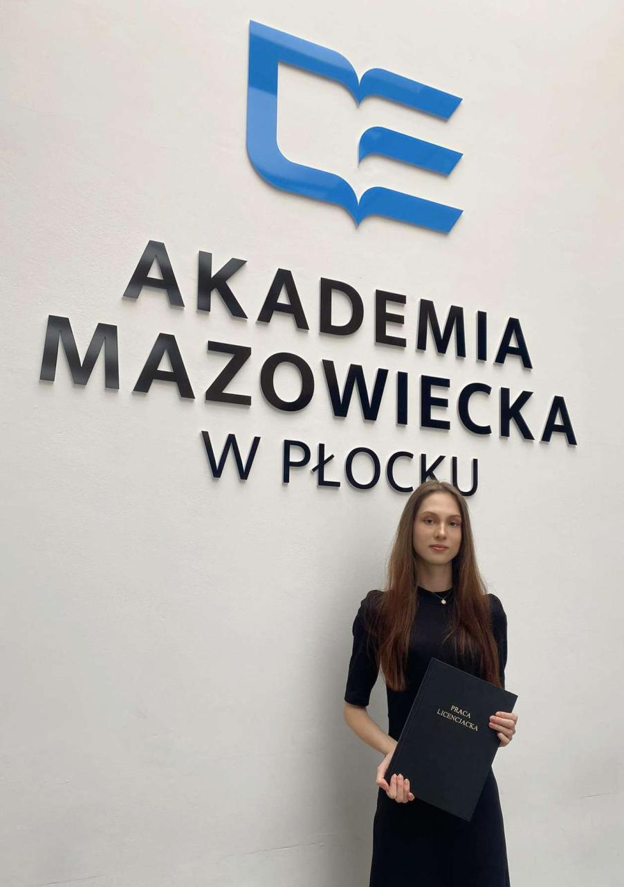

NLP / English teaching
✉ nbombalicka@gmail.com
linkedin.com/in/natalia-bombalicka/
I am studying English philology with a specialization in Natural Language Processing (NLP) at the University of Gdańsk. My experience in teaching English, gained during internships and work with students, has deepened my understanding of language structure, communication, and learning processes. I combine language skills with a growing interest in language technologies, text data analysis, and corpus annotation. I am open to developing my expertise in computational linguistics and IT applications in linguistics. Currently, I’m doing my apprenticeship at Visehub, where I create structured vocabulary lists to be integrated into a mobile language learning application, supporting content development and enhancing the app’s language learning functionality.